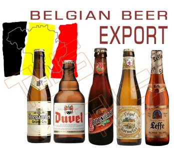
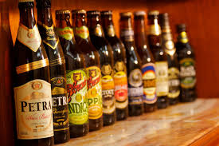
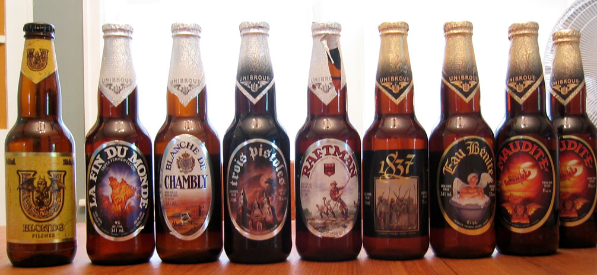
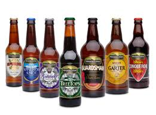

Beer in Belgium varies from pale lager to lambic beer and Flemish red. There are approximately 180 breweries in the country, ranging from international giants to microbreweries. On average, Belgians drink 84 litres of beer each year, down from around 200 each year in 1900. Most beers are bought or served in bottles, rather than cans, and almost every style of beer has its own particular, uniquely shaped glass or other drinking-vessel. Using the correct glass is considered to improve its flavor.
Belgium exports 60% of its beer. Some draught-beer brands produced by AB InBev - Stella Artois, Hoegaarden and Leffe - are available in several European countries. Aside from these, mostly bottled beer is exported across Europe. Cafés, exclusively or primarily offering Belgian beers, exist beyond Belgium in Australia, New Zealand, Canada, France, the United Kingdom and the United States, amongst others. Some beer festivals outside Belgium have a Belgian beer bar as an alternative to local products. In North America, a growing number of draught Belgian beer brands have started to become available, often at "Belgian Bars". Such brands include Brasserie Brunehaut, Karmeliet, Kwak, Maredsous, Mont Saint-Aubert, Palm, Rodenbach and St. Feuillien.
Blonde or Golden Ale These are a light variation on pale ale, often made with pilsner malt.Some beer writers regard blonde and golden ales as distinct styles, while others do not. Duvel is the archetypal Belgian blonde ale, and one of the most popular bottled beers in the country as well as being well-known internationally. Its name means "Devil" and some other blonde beers follow the theme—Satan, Lucifer and Judas for example. The style is popular with Wallonian brewers, the slightly hazy Moinette being the best-known example. Chouffe can be considered a spiced version (with coriander).
Trappist beers The brewing of Trappist beers takes place in Trappist monasteries.For a beer to qualify for Trappist certification, the brewery must be in a monastery, the monks must play a role in its production and the policies and the profits from the sale must be used to support the monastery or social programs outside. Only ten monasteries currently meet these qualifications, six of which are in Belgium, two in the Netherlands, one in Austria and one in the United States. Trappist beer is a controlled term of origin: it tells where the beers come from, it is not the name of a beer style. Beyond saying they are mostly top-fermented, the Trappist beers have very little in common stylistically.
Back to top
Brazil is the world's third largest market for beer with over 13.2 billion litres produced in 2012 and annual per capita consumption of 62,2 litres. The tradition of brewing in Brazil dates back to German immigration in the early nineteenth century. The first breweries date from the 1830s, the brand Bohemia is claimed to be the first Brazilian beer, with production starting in 1853 in the city of Petrópolis, Rio de Janeiro and is the oldest Brazilian beer which is still under production (now owned by Anheuser–Busch InBev). Naturally, many breweries appeared and disappeared in that period like Ritter from Rio Grande do Sul and Imperial Fábrica de Cerveja Nacional from Rio de Janeiro. Two important brands, Antarctica and Brahma, started production in the 1880s.
The majority of the market belongs to AmBev, the owner of the Brahma, Antarctica, Bohemia and Skol brands. Brazil's largest brewer was formed in 1999 from the merger of the two biggest brands, Brahma and Antarctica. In 2004, Ambev merged with Belgium's Interbrew (Stella Artois, Becks, Staropramen and many others) to form the world's largest brewer, now known as InBev. After the merger, Grupo Schincariol became the largest Brazilian-owned brewery in the country. Grupo Schincariol is, since 2011, a subsidiary of Japanese beverage company Kirin Brewery Company, and the name changed to Brasil Kirin.
In 2002, Molson Coors bought Brazil's second largest brewery Kaiser. In 2006, the Mexican FEMSA Cerveza acquired 68% of Kaiser Brewery from Molson Coors. Molson Coors still holds 15% of Kaiser brewery shares, and Heineken holds the remaining 17%. In 2006, FEMSA Cerveza released the Mexican brand Sol in the Brazilian market to compete to the biggest Inbev brands with poor results. In 2010, Heineken bought all FEMSA's brewery including the Brazilian unit.
There are a number of microbreweries in Brazil, the emergence of which are a relatively recent phenomenon. Some of the better renowned microbreweries include;
*Baden Baden (Recognised as the first microbrewery in Brazil)
*Eisenbahn
*Wäls
*Colorado
*DaDo Bier
*Cervejaria Backer
Curitiba and Blumenau are cities with several breweries: Curitiba: WayBeer, BodeBrown, Wensky Beer, Klein Bier, GaudenBier, Cervejas Pagan, Bierhoff, Morada and Asgard. Blumenau: Eisenbahn (Schincariol brand), Bierland and some soft American lager breweries.
Over the past decade or so Brazil has imported more and more brands of beer from Europe (particularly from Belgium) and the USA. These imports are a lot more expensive than locally brewed beers. However, there are a growing number of bars and beer shops dedicating themselves to selling a large range of craft and imported beer. Some international brands are actually produced in Brazil, such as Stella Artois and Heineken, but all are dedicated to the premium market with very small market share.
Back to top
Beer in Canada was introduced by European settlers in the seventeenth century, and a number of commercial brewers thrived until Prohibition in Canada. Though short-lived, very few brewers survived, and it was only in the late twentieth century that new breweries opened up. The Canadian Beer industry now plays an important role in Canadian identity, though globalization of the brewing industry has seen the major players in Canada acquired by or merged with foreign companies, notably its three largest beer producers, Labatt, Molson and Sleeman. The result is that Moosehead has become the largest fully Canadian-owned brewer.
Beer is the most popular alcoholic beverage in Canada, in terms of both volume and dollar value. In 2009 beer claimed 46% of the dollar value of alcoholic beverages sold in Canada. This compares to 29% for wine. Statistics Canada figures show that liquor sales in Canada amounted to $19.4 billion worth of alcoholic beverages, up 3.3 per cent from the year before. Beer sales totalled $8.8 billion, wine $5.7 billion and spirits $4.9 billion. 2.3 billion litres of beer were sold in 2009, a 0.9 per cent increase from the previous year. Per-capita beer sales have dropped 28 per cent from their peak of 115.2 litres in 1976 to 83.5 litres in 2009. By volume, imported beer has more than doubled its market share in the last decade. In 2009, imported beer had captured 13% of the beer market in Canada, up from six per cent in 1999. The top selling style of beer in Canada, by far, is the pale lager.
Quebec beer
46 of the top-ranked 100 beers in Canada are brewed in Quebec, according to Beer Advocate. The ratings are led by Dieu du Ciel of Montreal (with 17), and followed by Unibroue of Chambly (10), Microbrasserie Charlevoix of Baie-Saint-Paul (7), Les Trois Mousquetaires of Brossard (5), McAuslan Brewing of Montreal (3), and Le Trou Du Diable of Shawinigan, L'Amère à Boire of Montreal, Brasseurs Illimités of Saint-Eustache, and Hopfenstark of L'Assomption, with one each.
The Mondial de la Bière was founded in 1994 in Montreal and attracts around 80,000 people, while Quebec City held its first beer festival, the Festibière, in 2010.
Back to top
Beer in the United Kingdom has a long history, and has quite distinct traditions. Historically the main styles were top-fermented Bitters, Porters, Stouts and Milds, but after World War II lagers took over half the market by volume. The Campaign for Real Ale (CAMRA) was founded in 1971 and has encouraged the preservation and revival of traditional styles of ale. In particular CAMRA has promoted cask conditioned beer, which completes its maturation in casks in the cellar of the pub rather than at the brewery. As of 2014 the UK drank 634 million pints (3.6 million hectolitres) of cask ale, representing 60% of ale in pubs and restaurants and 17% of all beer in pubs.In total 42.42 million hectolitres of beer were produced in 2013of which 48% was sold in the off-trade (retail shops).
In the Middle Ages beer was brewed by abbeys and independent alehouses, but the Dissolution of the Monasteries in the 16th century meant British brewing lost its connection with religious houses earlier than in other European countries. As a result, the industry has some of the oldest names in British corporate history – Shepherd Neame were incorporated in 1698, and the Bass Red Triangle was the first trademark to be registered. Family companies became national brands during the 19th century, many based in Burton-on-Trent which had particularly good water for brewing. By the 1970s brewing became concentrated in a handful of large national companies, which became building blocks of major multinationals such as AB InBev. A tax cut for small breweries in 2002 has seen an explosion of new breweries – as of September 2014 there were over 1472 breweries in the UK, with three new breweries starting every week. This is the most breweries per capita in the world; they produce over 8,000 regular beers and thousands more seasonal and one-off brews.
The first tax on beer in the United Kingdom was the Saladin tithe, introduced in 1188 by Henry II to raise money for the crusades.
982 ha (2,430 acres) of hops were grown in 2014, down from a peak of 31,161 ha (77,000 acres) in 1878. British varieties and their offspring have come to dominate world hop production, both landraces such as Fuggles or Goldings and products of the breeding programme at Wye College such as Challenger and Target. The cool maritime climate means that British-grown hops have less myrcene than the same varieties grown elsewhere, allowing more delicate, complex aromas to come through. British ales tend to reflect these characteristics and have more of a balance between bitterness and aroma compared to New World craft ales, although in the 2010s many British breweries added an American Pale Ale to their range with very citrussy, hoppy aromas.
Back to top